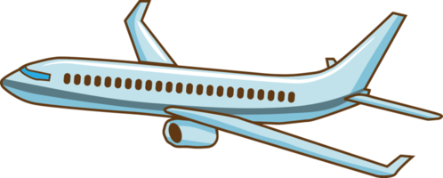
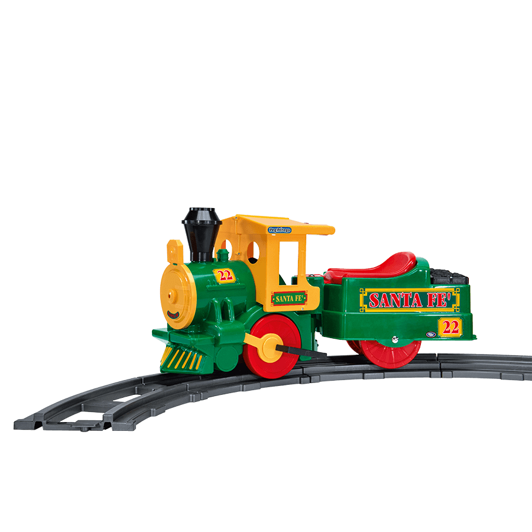
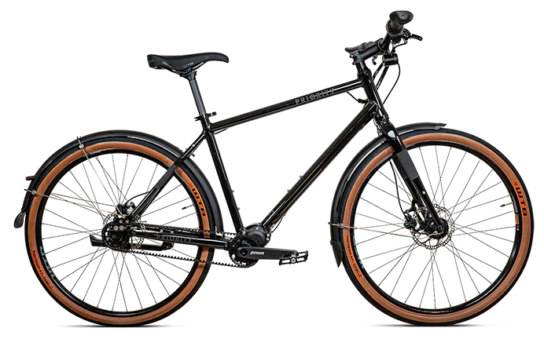

Utazás
Számos légitársaság kínál járatokat Franciaországba, beleértve a fapados légitársaságokat is, mint például a Ryanair és az EasyJet, valamint a hagyományos légitársaságokat, mint az Air France és a British Airways.

Az európai nagysebességű vasúthálózat, különösen a TGV (Train à Grande Vitesse) és az Eurostar, kényelmes és gyors lehetőséget kínál Franciaországba utazni.

Kerékpárral
A kerékpáros turizmus egyre népszerűbb, különösen a kalandvágyó és sportos utazók körében. Európa-szerte számos kerékpárút vezet Franciaországba, és az ország belső kerékpárútjai is kiválóak, így remek lehetőség a természetközeli utazásra.
A kerékpáros turizmus egyre népszerűbb, különösen a kalandvágyó és sportos utazók körében. Európa-szerte számos kerékpárút vezet Franciaországba, és az ország belső kerékpárútjai is kiválóak, így remek lehetőség a természetközeli utazásra.

Autóval
Az autós utazás nagy rugalmasságot biztosít, és lehetőséget ad arra, hogy a kisebb falvakat és a vidéki területeket is felfedezzük. Franciaország jól kiépített autópálya-hálózattal rendelkezik, bár az autópályák használata sok helyen fizetős. Az autóval történő utazáshoz fontos megjegyezni, hogy Franciaországban jobboldali közlekedés van.
Az autós utazás nagy rugalmasságot biztosít, és lehetőséget ad arra, hogy a kisebb falvakat és a vidéki területeket is felfedezzük. Franciaország jól kiépített autópálya-hálózattal rendelkezik, bár az autópályák használata sok helyen fizetős. Az autóval történő utazáshoz fontos megjegyezni, hogy Franciaországban jobboldali közlekedés van.